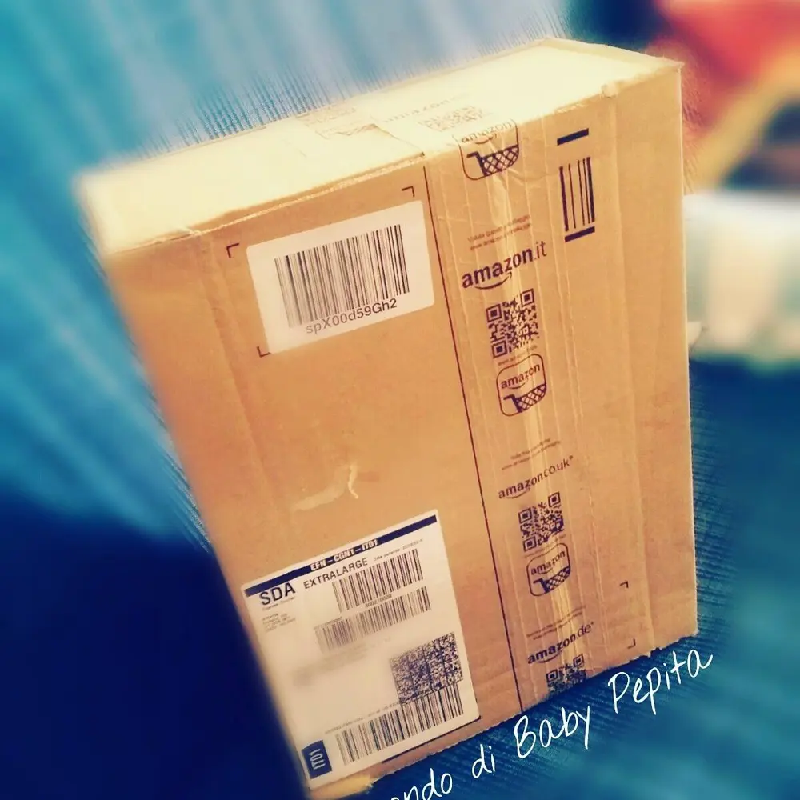
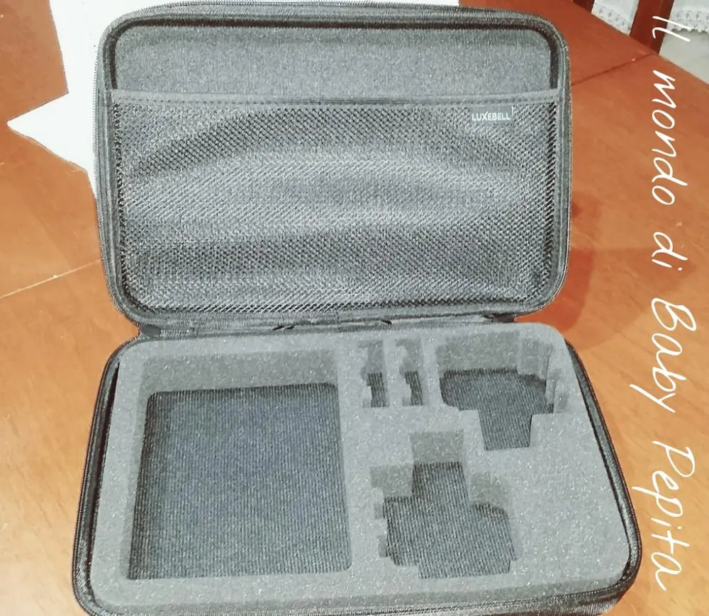
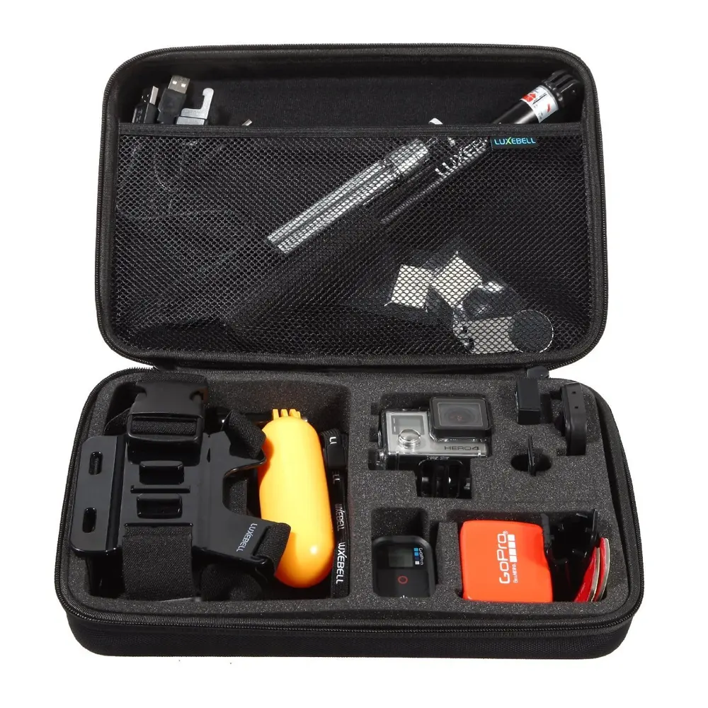
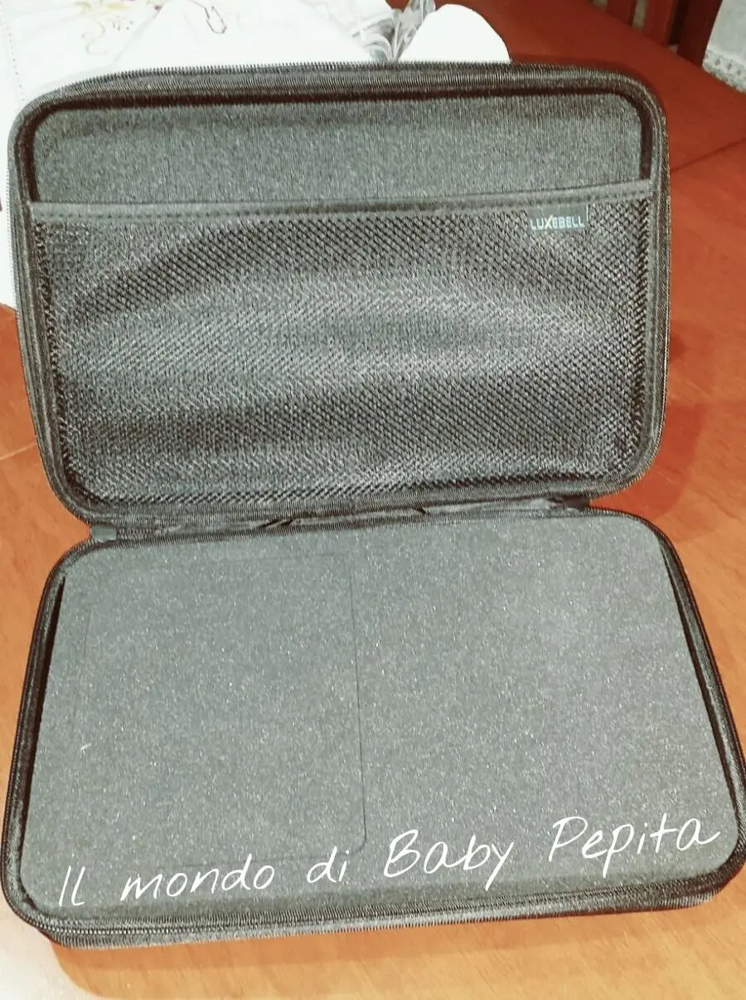
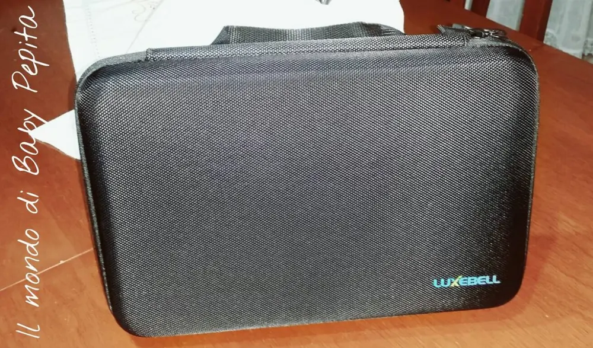

Simple Tek - valigetta per fotocamera GO PRO
Come da titolo oggi voglio parlarvi della mia nuova collaborazione AMAZON .
Questa volta devo ringraziare il venditore Simple Tek per la fiducia e la disponibilità.
Vi parlo di un prodotto non propriamente makeupposo o profumato ahahah ma di una valigetta, ovvero la Valigetta per fotocamere GoPro.

Arrivata ben imballata come solo Amazon sa fare, la valigetta si presenta così. .Al suo interno ha una spugna morbidissima con scomparti tagliati delle varie forme degli accessori della fotocamera GoPro. .

L'utilizzo sarebbe così. .
Sullo schienale ha questa tasca a retina che potrete utilizzare per ogni oggetto in più o cavi e fili che non sapete dove riporli. .come ad esempio cavi, treppiedi, staffe e altri accessori possono essere facilmente riposti in questo vano superiore. .

- Interamente lavabile,e dura fuori al punto da proteggere fotocamera o Tablet da urti e anche da sporco per la resistente lampo che permette di chiuderla con facilità.

Io per la verità ho voluto questa valigetta non per la fotocamera GoPro (che non ho tra l'altro) ahahah ma per tablet, poichè levando la spugna sagomata diventa una custodia da tablet senza nessun problema. .

Prezzo: 22,99€
Vi lascio il link dove poterla comprare. .
http://www.amazon.it/dp/B00LVQMMOO/ref=pe_386201_41597321_TE_item